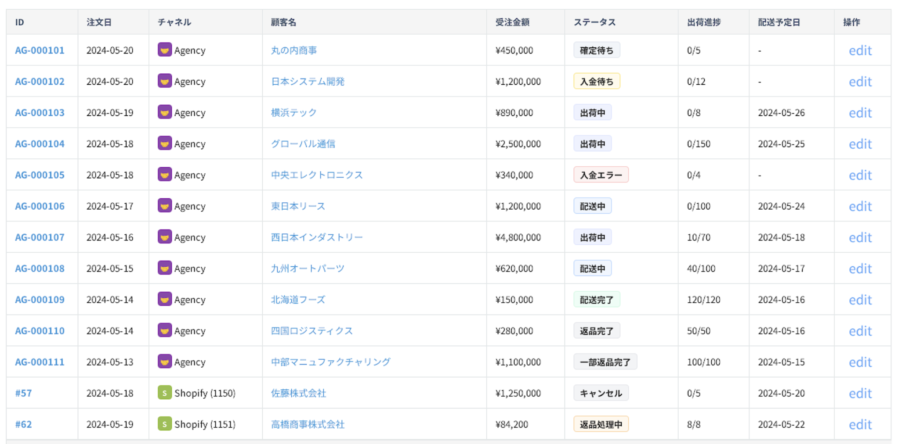
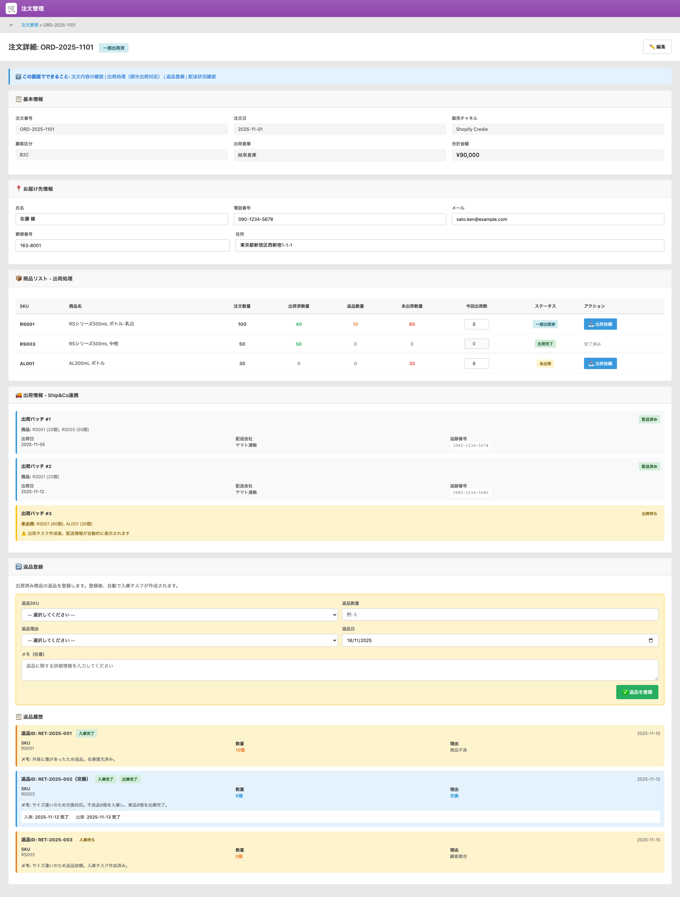

UI Spec
受注アプリ（Orders App）
受注アプリ（Orders App）UI画面仕様書
対象画面: 受注一覧（List）＋ 受注詳細（Detail）
1. 画面の目的（ビジネス上の役割）
このアプリは、Shopify（B2C）および Agency Portal（B2B）の注文を一元管理し、
出荷・請求・返品・在庫減算の全体プロセスをつなぐコア画面です。
- Shopify注文の自動取込と処理管理
- Agency注文の承認・請求・入金後出荷フロー管理
- 出荷タスクは自動生成（ユーザーが作成ボタンを押す必要はない）
- 部分出荷、キャンセルの管理
- 出荷後の返品（Return）レコードの生成と親子リンク管理
2. 利用者ストーリー（User Scenario）
2.1 Shopify注文の場合
- Shopify webhook → 受注アプリへ自動作成
- オペレーターが内容確認
- システムが自動で出荷タスクを作成し、倉庫へ通知
- 倉庫が出荷 → Ship&Co連携 → 送り状番号が自動登録
- ステータス = 出荷済 へ更新
2.2 Agency注文の場合（B2B）
- 代理店が Portal で注文 → 受注作成
- ステータス＝「要確認」
- 社内スタッフが承認
- 請求書を送付、代理店が支払う
- 入金確認後、自動で出荷タスク生成
- 倉庫が出荷 → 出荷済
2.3 返品（Return）の流れ
- 注文詳細画面から行単位で「返品」操作
- 同一アプリ内に返品子レコードが自動作成
- 子レコードに基づき返品入庫タスクを自動生成
- 倉庫が入庫 → 在庫が戻る
3. 主要機能
- Shopify / Agency 全注文の一覧管理
- 注文ステータス・注文番号・代理店で検索
- 注文詳細画面で数量調整 / 部分出荷 / 返品操作
- 返品は子レコードとして管理（ORD001-R01）
- 在庫引当・出荷タスクはすべて自動処理
4. 受注一覧画面
4.1 表示項目
| 項目名 |
説明 |
| 注文ID |
レコード番号。クリックすると詳細へ。 |
| 親注文 |
返品レコードの場合、親ID（ORD001 等）へリンク。 |
| 注文番号 |
外部チャネルのID（例: ORD-2025-1101）。 |
| 販売チャネル |
Shopify / Agency。 |
| 顧客区分 |
B2C / B2B。 |
| 総数量 |
注文商品の数量合計（返品時はマイナス）。 |
| 合計金額 |
請求総額（返品時はマイナス）。 |
| ステータス |
新規 / 要確認 / 承認済 / 出荷済 / 一部出荷 / 返品処理中 / 完了など |
| 操作 |
詳細ボタン。 |
4.2 画面イメージ

5. 受注詳細画面

5.1 基本情報
| 項目名 |
説明 |
| 注文番号 |
外部チャネルの注文ID |
| 注文日時 |
注文確定日時 |
| 販売チャネル |
Shopify / Agency |
| 顧客区分 |
B2C / B2B |
| 出荷倉庫 |
固定（Credie倉庫） |
| ステータス |
注文全体の処理状況 |
5.2 お届け先情報
| 項目名 |
説明 |
| 氏名 |
受取人 |
| 電話番号 |
受取人の電話番号 |
| メールアドレス |
顧客メール |
| 郵便番号 |
配送先郵便番号 |
| 住所 |
都道府県・市区町村・番地など |
5.3 注文サマリー
| 項目名 |
説明 |
| 数量合計 |
全明細の総数 |
| 合計金額 |
最終請求額 |
5.4 商品リストと数量調整
このセクションでは、部分出荷、キャンセル、返品操作を行う。
| 項目名 |
説明 |
| 商品SKU |
商品マスタのSKU |
| 商品名 |
商品名称 |
| 注文数量 |
元の注文数量 |
| 変更後数量 |
出荷・返品等を反映した数量 |
| 履歴状況 |
「出荷済」「返品済」「キャンセル済」など |
| アクション |
- 分割：部分出荷用
- 返品：返品子レコードを生成
- キャンセル：未出荷分のキャンセル
|
5.5 返品（子レコード）
返品は同じアプリ内のサブレコードとして管理される。
- ID形式：ORD001-R01
- 親IDとリンク保持
- 返品数量・理由・日付を保存
- 返品入庫タスクは自動作成
5.6 操作ボタン
6. 確認ポイント
- Shopify・Agencyの業務フローと整合しているか
- 部分出荷仕様は問題ないか
- 返品を子レコードとして扱う仕様で問題ないか
- 出荷タスクが自動作成で問題ないか（手動生成は不要）